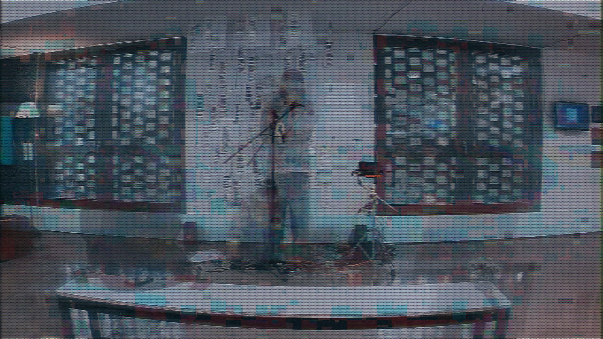

Defending Jingjie in Front of His Interpreters asks how a performance can continue to speak after its original moment has passed, and who gains authority to interpret it once it survives only as data, noise, and archive. It unfolds across two stages of the same exhaustion, separated in time but sharing one sound. It all began as an act of extreme, self-imposed labor: for seven hours, I recited an endless stream of text generated by a large language model fine-tuned on my own private writings. My voice and the model's output were driven toward the same collapse—two forms of overproduction, human exhaustion and AI degeneration, gradually converged into the same repetitive sonic representation, a callus noise formed by their friction. This collapse was all documented, and my body functioned less as a site of personal expression than as a methodological intermediary. It shows an alienated body, a worn-down process. The resulting seven-hour audio-visual recording remained and became the corpus, a material residue from which the machine-listening system could continuously retrieve material, without my involvement.
In its current, web-native form, this archive is reactivated as a continuous live broadcast event. This web interface, modeled on the anonymous churn of danmaku culture, lets audiences type a single line that vanishes the instant it is sent, no log, no name, no trace. In this structural deletion, the system is built so that neither the audience nor I can ever retrieve what was typed, only what noise it became. Therefore, seconds later, it returns as sound: text-to-speech run through RAVE, a neural network trained on my own seven hours of recitation voice, so that every stranger's words emerge in my recitation, closer to noise than language. Then, FluCoMa and Data Knot in Max/MSP listen to this borrowed voice, measure and match its acoustic features against the seven-hour sound archive, and pull back the most similar fragments of the original performance, spliced, looped, and recombined onto the screen.
Or rather, each visitor triggers less as a response than an interpretative haunting: their anonymous input becomes a new interpreter without intuitive rules, calling residue fragments of the archived performance, while the system answers with whichever fragment of that labor most resembles the disturbance. Their own words are never heard, muted, resynthesized, yet this erasure is also what activates different agency between participant, archive, and system through this blind, untraceable participation in someone else's archive. Defending Jingjie in Front of His Interpreters presents, finally, a residue of a noise that remains—still recitable, still responsive, still capable of being startled into language by a stranger, long after its source has gone silent.
Jingjie Zhang is an artist and designer currently living in London. Currently a communication PhD candidate at the Royal College of Art, with a master's degree from the Design Department at Goldsmiths, University of London. Principal creator of the indie band Subsequence, Dog! and main founder of the Glimpse In a Daze art collective and studio. His practice spans performance, installation, and text. He employs techniques such as machine listening, sequence models, and real-time systems to investigate the mechanical reproduction, redundancy, ambiguity, and clichés within sonic and textual information, exploring contemporary forms of noise.
